Short Classic Stories
The project short classic stories provides free navigation in literary works by audiences of different age groups. Using a simple on-screen touch method, the project offers free cultural and literary immersion.
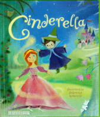
Cinderella
Once upon a time, there was a beautiful girl named Cinderella.
She lived with her wicked stepmother and two stepsisters. They
treated Cinderella very badly. One day, they were invited for a
grand ball in the king’s palace. But Cinderella’s stepmother
would not let her go. Cinderella was made to sew new party
gowns for her stepmother and stepsisters, and curl their hair.
They then went to the ball, leaving Cinderella alone at home.
Cinderella felt very sad and began to cry. Suddenly, a fairy godmother appeared and said, “Don’t cry, Cinderella! I will send you to the ball!” But Cinderella was sad. She said, “I don’t have a gown to wear for the ball!” The fairy godmother waved her magic wand and changed Cinderella’s old clothes into a beautiful new gown! The fairy godmother then touched Cinderella’s feet with the magic wand. And lo! She had beautiful glass slippers! “How will I go to the grand ball?” asked Cinderella. The fairy godmother found six mice playing near a pumpkin, in the kitchen. She touched them with her magic wand and the mice became four shiny black horses and two coachmen and the pumpkin turned into a golden coach. Cinderella was overjoyed and set off for the ball in the coach drawn by the six black horses. Before leaving. the fairy godmother said, “Cinderella, this magic will only last until midnight! You must reach home by then!”
When Cinderella entered the palace, everybody was struck by her beauty. Nobody, not even Cinderella’s stepmother or stepsisters, knew who she really was in her pretty clothes and shoes. The handsome prince also saw her and fell in love with Cinderella. He went to her and asked, “Do you want to dance?” And Cinderella said, “Yes!” The prince danced with her all night and nobody recognized the beautiful dancer. Cinderella was so happy dancing with the prince that she almost forgot what the fairy godmother had said. At the last moment, Cinderella remembered her fairy godmother’s words and she rushed to go home. “Oh! I must go!” she cried and ran out of the palace. One of her glass slippers came off but Cinderella did not turn back for it. She reached home just as the clock struck twelve. Her coach turned back into a pumpkin, the horses into mice and her fine ball gown into rags. Her stepmother and stepsisters reached home shortly after that. They were talking about the beautiful lady who had been dancing with the prince.
The prince had fallen in love with Cinderella and wanted to find out who the beautiful girl was, but he did not even know her name. He found the glass slipper that had come off Cinderella’s foot as she ran home. The prince said, “I will find her. The lady whose foot fits this slipper will be the one I marry!” The next day, the prince and his servants took the glass slipper and went to all the houses in the kingdom. They wanted to find the lady whose feet would fit in the slipper. All the women in the kingdom tried the slipper but it would not fit any of them. Cinderella’s stepsisters also tried on the little glass slipper. They tried to squeeze their feet and push hard into the slipper, but the servant was afraid the slipper would break. Cinderella’s stepmother would not let her try the slipper on, but the prince saw her and said, “Let her also try on the slipper!” The slipper fit her perfectly. The prince recognized her from the ball. He married Cinderella and together they lived happily ever after.
Cinderella felt very sad and began to cry. Suddenly, a fairy godmother appeared and said, “Don’t cry, Cinderella! I will send you to the ball!” But Cinderella was sad. She said, “I don’t have a gown to wear for the ball!” The fairy godmother waved her magic wand and changed Cinderella’s old clothes into a beautiful new gown! The fairy godmother then touched Cinderella’s feet with the magic wand. And lo! She had beautiful glass slippers! “How will I go to the grand ball?” asked Cinderella. The fairy godmother found six mice playing near a pumpkin, in the kitchen. She touched them with her magic wand and the mice became four shiny black horses and two coachmen and the pumpkin turned into a golden coach. Cinderella was overjoyed and set off for the ball in the coach drawn by the six black horses. Before leaving. the fairy godmother said, “Cinderella, this magic will only last until midnight! You must reach home by then!”
When Cinderella entered the palace, everybody was struck by her beauty. Nobody, not even Cinderella’s stepmother or stepsisters, knew who she really was in her pretty clothes and shoes. The handsome prince also saw her and fell in love with Cinderella. He went to her and asked, “Do you want to dance?” And Cinderella said, “Yes!” The prince danced with her all night and nobody recognized the beautiful dancer. Cinderella was so happy dancing with the prince that she almost forgot what the fairy godmother had said. At the last moment, Cinderella remembered her fairy godmother’s words and she rushed to go home. “Oh! I must go!” she cried and ran out of the palace. One of her glass slippers came off but Cinderella did not turn back for it. She reached home just as the clock struck twelve. Her coach turned back into a pumpkin, the horses into mice and her fine ball gown into rags. Her stepmother and stepsisters reached home shortly after that. They were talking about the beautiful lady who had been dancing with the prince.
The prince had fallen in love with Cinderella and wanted to find out who the beautiful girl was, but he did not even know her name. He found the glass slipper that had come off Cinderella’s foot as she ran home. The prince said, “I will find her. The lady whose foot fits this slipper will be the one I marry!” The next day, the prince and his servants took the glass slipper and went to all the houses in the kingdom. They wanted to find the lady whose feet would fit in the slipper. All the women in the kingdom tried the slipper but it would not fit any of them. Cinderella’s stepsisters also tried on the little glass slipper. They tried to squeeze their feet and push hard into the slipper, but the servant was afraid the slipper would break. Cinderella’s stepmother would not let her try the slipper on, but the prince saw her and said, “Let her also try on the slipper!” The slipper fit her perfectly. The prince recognized her from the ball. He married Cinderella and together they lived happily ever after.
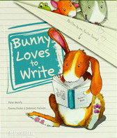
Bunny loves to write
...
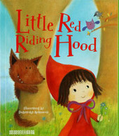
Little red hiding hood
One day, Little Red Riding Hood’s mother said to her, “Take
this basket of goodies to your grandma’s cottage, but don’t
talk to strangers on the way!” Promising not to, Little Red
Riding Hood skipped off. On her way she met the Big Bad Wolf
who asked, “Where are you going, little girl?” “To my grandma’s,
Mr. Wolf!” she answered.
The Big Bad Wolf then ran to her grandmother’s cottage much before Little Red Riding Hood, and knocked on the door. When Grandma opened the door, he locked her up in the cupboard. The wicked wolf then wore Grandma’s clothes and lay on her bed, waiting for Little Red Riding Hood.
When Little Red Riding Hood reached the cottage, she entered and went to Grandma’s bedside. “My! What big eyes you have, Grandma!” she said in surprise. “All the better to see you with, my dear!” replied the wolf. “My! What big ears you have, Grandma!” said Little Red Riding Hood. “All the better to hear you with, my dear!” said the wolf. “What big teeth you have, Grandma!” said Little Red Riding Hood. “All the better to eat you with!” growled the wolf pouncing on her. Little Red Riding Hood screamed and the woodcutters in the forest came running to the cottage. They beat the Big Bad Wolf and rescued Grandma from the cupboard. Grandma hugged Little Red Riding Hood with joy. The Big Bad Wolf ran away never to be seen again. Little Red Riding Hood had learnt her lesson and never spoke to strangers ever again.
The Big Bad Wolf then ran to her grandmother’s cottage much before Little Red Riding Hood, and knocked on the door. When Grandma opened the door, he locked her up in the cupboard. The wicked wolf then wore Grandma’s clothes and lay on her bed, waiting for Little Red Riding Hood.
When Little Red Riding Hood reached the cottage, she entered and went to Grandma’s bedside. “My! What big eyes you have, Grandma!” she said in surprise. “All the better to see you with, my dear!” replied the wolf. “My! What big ears you have, Grandma!” said Little Red Riding Hood. “All the better to hear you with, my dear!” said the wolf. “What big teeth you have, Grandma!” said Little Red Riding Hood. “All the better to eat you with!” growled the wolf pouncing on her. Little Red Riding Hood screamed and the woodcutters in the forest came running to the cottage. They beat the Big Bad Wolf and rescued Grandma from the cupboard. Grandma hugged Little Red Riding Hood with joy. The Big Bad Wolf ran away never to be seen again. Little Red Riding Hood had learnt her lesson and never spoke to strangers ever again.
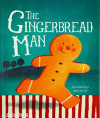
Little red hiding hood
A little old man and a little old woman stayed in a cottage.
One day, the woman made a gingerbread man for dinner. She decorated the gingerbread man with eyes made of currants and buttons made of cherries. But when she took out gingerbread man from the oven, he jumped out and ran away.
The old woman and her husband ran after him but gingerbread man was too fast for them. Neither the pig, nor the cow, nor the horse who followed, could outrun gingerbread man. Now, the gingerbread man came to a river and didn’t know how to cross it. A sly fox came up to him and offered to help him to cross the river. He asked him to sit on his tail but gingerbread man began to get wet. Then the fox told him to sit on his back and finally on his nose.
No sooner did gingerbread man sit on the fox’s nose, that the sly fox tossed him and gobbled him up.
One day, the woman made a gingerbread man for dinner. She decorated the gingerbread man with eyes made of currants and buttons made of cherries. But when she took out gingerbread man from the oven, he jumped out and ran away.
The old woman and her husband ran after him but gingerbread man was too fast for them. Neither the pig, nor the cow, nor the horse who followed, could outrun gingerbread man. Now, the gingerbread man came to a river and didn’t know how to cross it. A sly fox came up to him and offered to help him to cross the river. He asked him to sit on his tail but gingerbread man began to get wet. Then the fox told him to sit on his back and finally on his nose.
No sooner did gingerbread man sit on the fox’s nose, that the sly fox tossed him and gobbled him up.

Goldilocks and the three bears
There were three bears who lived in the woods. There was a big
bear, medium bear, and a wee bear. One day when they left their
house, a little girl named Goldilocks walked into their house.
The bears had made porridge.
Goldilocks tried the big bear's porridge but it was too hot; she then tried the medium bear's porridge but it was too cold. Then she tried the wee bear's porridge and it was just right, so she ate it all. Then, she sat in all of their chairs. The big bear's chair was too hard, the medium bear's chair was too soft, but the wee bear's chair was just right so she sat there until the bottom came out.
Goldilocks felt tired so she went to big bear's bed but it was too high at the head, the medium bear's bed was too high at the feet, but the wee bear's bed was just right so she fell asleep there. The bears returned home and realized someone had eaten some of their porridge (and all of wee bear's), sat in all of their chairs (and broke the bottom out of wee bear's), and lied in all of their beds (and was still in wee bear's).
Goldilocks did not hear the big bear's voice because it sounded like thunder, the medium bear's voice sounded like a dream, but the wee bear's shrill voice woke Goldilocks up and she saw the three bears sitting on the edge of her bed and ran out the window. The bears never saw Goldilocks again.
Goldilocks tried the big bear's porridge but it was too hot; she then tried the medium bear's porridge but it was too cold. Then she tried the wee bear's porridge and it was just right, so she ate it all. Then, she sat in all of their chairs. The big bear's chair was too hard, the medium bear's chair was too soft, but the wee bear's chair was just right so she sat there until the bottom came out.
Goldilocks felt tired so she went to big bear's bed but it was too high at the head, the medium bear's bed was too high at the feet, but the wee bear's bed was just right so she fell asleep there. The bears returned home and realized someone had eaten some of their porridge (and all of wee bear's), sat in all of their chairs (and broke the bottom out of wee bear's), and lied in all of their beds (and was still in wee bear's).
Goldilocks did not hear the big bear's voice because it sounded like thunder, the medium bear's voice sounded like a dream, but the wee bear's shrill voice woke Goldilocks up and she saw the three bears sitting on the edge of her bed and ran out the window. The bears never saw Goldilocks again.
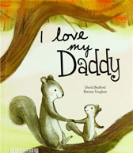
I love my dad
...
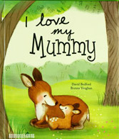
I love my mummy
...
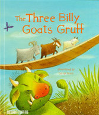
Three billy goats gruffy
There lived three billy goats who decided to climb a mountain
to chew grass. But a wooden bridge had to be crossed to reach
the mountain. Underneath it lived a one-eyed troll (giant),
who ate up all those who tried to cross the bridge.
The smallest Billy Goat Gruff, (for that was their name), went first. As he stepped on the bridge, the troll shouted, “Who goes there across my bridge?”
“I am the smallest Billy Goat Gruff,” came the reply.
“I shall eat you up,” roared the troll.
“Please wait, for a bigger goat is on its way,” said the small Billy Goat Gruff. The greedy troll decided to let him go.
The second billy goat also told the troll the samething and crossed the bridge. On seeing the third billy goat, the troll pounced on him. But the goat was big and he knocked the troll down with his huge horns and killed it.
The smallest Billy Goat Gruff, (for that was their name), went first. As he stepped on the bridge, the troll shouted, “Who goes there across my bridge?”
“I am the smallest Billy Goat Gruff,” came the reply.
“I shall eat you up,” roared the troll.
“Please wait, for a bigger goat is on its way,” said the small Billy Goat Gruff. The greedy troll decided to let him go.
The second billy goat also told the troll the samething and crossed the bridge. On seeing the third billy goat, the troll pounced on him. But the goat was big and he knocked the troll down with his huge horns and killed it.
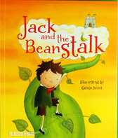
Jack and the beanstalk
Once upon a time there lived a poor widow and her son Jack.
One day, Jack’s mother told him to sell their only cow. Jack
went to the market and on the way he met a man who wanted to
buy his cow. Jack asked, “What will you give me in return for
my cow?” The man answered, “I will give you five magic beans!”
Jack took the magic beans and gave the man the cow. But when
he reached home, Jack’s mother was very angry. She said, “You
fool! He took away your cow and gave you some beans!” She
threw the beans out of the window. Jack was very sad and
went to sleep without dinner.
The next day, when Jack woke up in the morning and looked out of the window, he saw that a huge beanstalk had grown from his magic beans! He climbed up the beanstalk and reached a kingdom in the sky. There lived a giant and his wife. Jack went inside the house and found the giant’s wife in the kitchen. Jack said, “Could you please give me something to eat? I am so hungry!” The kind wife gave him bread and some milk.
While he was eating, the giant came home. The giant was very big and looked very fearsome. Jack was terrified and went and hid inside. The giant cried, “Fee-fifo-fum, I smell the blood of an Englishman. Be he alive, or be he dead, I’ll grind his bones to make my bread!” The wife said, “There is no boy in here!” So, the giant ate his food and then went to his room. He took out his sacks of gold coins, counted them and kept them aside. Then he went to sleep. In the night, Jack crept out of his hiding place, took one sack of gold coins and climbed down the beanstalk. At home, he gave the coins to his mother. His mother was very happy and they lived well for sometime.
climbed the beanstalk and went to the giant’s house again. Once again, Jack asked the giant’s wife for food, but while he was eating the giant returned. Jack leapt up in fright and went and hid under the bed. The giant cried, “Fee-fifo-fum, I smell the blood of an Englishman. Be he alive, or be he dead, I’ll grind his bones to make my bread!” The wife said, “There is no boy in here!” The giant ate his food and went to his room. There, he took out a hen. He shouted, “Lay!” and the hen laid a golden egg. When the giant fell asleep, Jack took the hen and climbed down the beanstalk. Jack’s mother was very happy with him.
After some days, Jack once again climbed the beanstalk and went to the giant’s castle. For the third time, Jack met the giant’s wife and asked for some food. Once again, the giant’s wife gave him bread and milk. But while Jack was eating, the giant came home. “Fee-fi-fo-fum, I smell the blood of an Englishman. Be he alive, or be he dead, I’ll grind his bones to make my bread!” cried the giant. “Don’t be silly! There is no boy in here!” said his wife.
The giant had a magical harp that could play beautiful songs. While the giant slept, Jack took the harp and was about to leave. Suddenly, the magic harp cried, “Help master! A boy is stealing me!” The giant woke up and saw Jack with the harp. Furious, he ran after Jack. But Jack was too fast for him. He ran down the beanstalk and reached home. The giant followed him down. Jack quickly ran inside his house and fetched an axe. He began to chop the beanstalk. The giant fell and died.
Jack and his mother were now very rich and they lived happily ever after.
The next day, when Jack woke up in the morning and looked out of the window, he saw that a huge beanstalk had grown from his magic beans! He climbed up the beanstalk and reached a kingdom in the sky. There lived a giant and his wife. Jack went inside the house and found the giant’s wife in the kitchen. Jack said, “Could you please give me something to eat? I am so hungry!” The kind wife gave him bread and some milk.
While he was eating, the giant came home. The giant was very big and looked very fearsome. Jack was terrified and went and hid inside. The giant cried, “Fee-fifo-fum, I smell the blood of an Englishman. Be he alive, or be he dead, I’ll grind his bones to make my bread!” The wife said, “There is no boy in here!” So, the giant ate his food and then went to his room. He took out his sacks of gold coins, counted them and kept them aside. Then he went to sleep. In the night, Jack crept out of his hiding place, took one sack of gold coins and climbed down the beanstalk. At home, he gave the coins to his mother. His mother was very happy and they lived well for sometime.
climbed the beanstalk and went to the giant’s house again. Once again, Jack asked the giant’s wife for food, but while he was eating the giant returned. Jack leapt up in fright and went and hid under the bed. The giant cried, “Fee-fifo-fum, I smell the blood of an Englishman. Be he alive, or be he dead, I’ll grind his bones to make my bread!” The wife said, “There is no boy in here!” The giant ate his food and went to his room. There, he took out a hen. He shouted, “Lay!” and the hen laid a golden egg. When the giant fell asleep, Jack took the hen and climbed down the beanstalk. Jack’s mother was very happy with him.
After some days, Jack once again climbed the beanstalk and went to the giant’s castle. For the third time, Jack met the giant’s wife and asked for some food. Once again, the giant’s wife gave him bread and milk. But while Jack was eating, the giant came home. “Fee-fi-fo-fum, I smell the blood of an Englishman. Be he alive, or be he dead, I’ll grind his bones to make my bread!” cried the giant. “Don’t be silly! There is no boy in here!” said his wife.
The giant had a magical harp that could play beautiful songs. While the giant slept, Jack took the harp and was about to leave. Suddenly, the magic harp cried, “Help master! A boy is stealing me!” The giant woke up and saw Jack with the harp. Furious, he ran after Jack. But Jack was too fast for him. He ran down the beanstalk and reached home. The giant followed him down. Jack quickly ran inside his house and fetched an axe. He began to chop the beanstalk. The giant fell and died.
Jack and his mother were now very rich and they lived happily ever after.
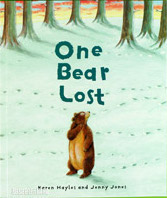
Jack and the beanstalk
...
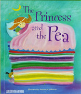
The princess and the pea
...
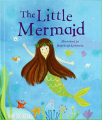
The princess and the pea
...